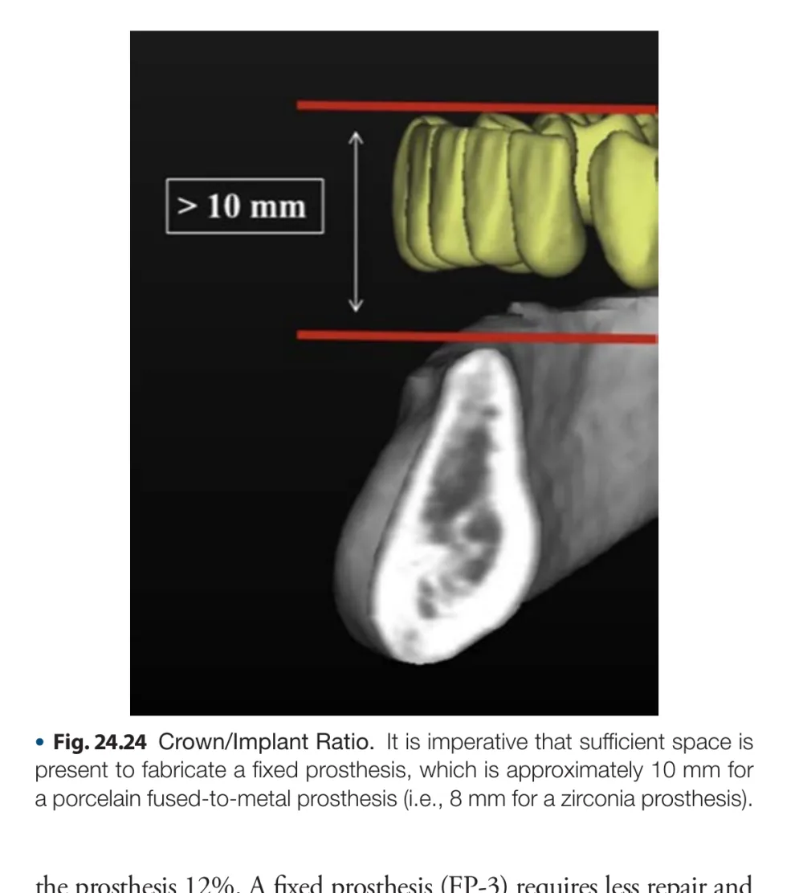

نسخه استخراجشده؛ ترجمه یا تأیید علمی انجام نشده است. وضعیت: captured
۶ — گسترش کمتر بافت نرم.
پروتز ثابت ایمپلنت، پوشش و گسترش بافت نرم پروتز را کاهش میدهد. این بهویژه برای دنچرپوشهای تازهکار، بیماران با توروس یا اگزوستوز، و بیماران با آستانهی پایین تهوع اهمیت دارد.
و یک ملاحظهی زیبایی: وجود فلنج لبیال در یک دنچر معمولی میتواند در بیمار با کشیدنهای اخیر، به کانتور صورتی اغراقشده بینجامد. پروتزهای ایمپلنتساپورت به گسترش لبیال یا پوشش بافت نرم گسترده نیاز ندارند.
و یک قاعدهی طراحی که مستقیماً به بهداشت مربوط است: سطح داخلی (اینتاگلیو) پروتز ثابت باید در حالت ایدهآل محدب باشد، نه مقعر — چون سطح مقعر بهداشت را دشوار میکند.
۷ — هزینههای درازمدت کمتر.
پوشندگان اوردنچر مندیبل اغلب هزینههای درازمدت بیشتری از دارندگان ترمیم ثابت متحمل میشوند. اتچمنتهایی مانند لوکیتور، اورینگ یا کلیپس ساییده میشوند و باید مرتب تعویض شوند. تعویضها در سال اول بیشتر به نظر میرسند، ولی یک گام نگهداری ضروری باقی میمانند.
و یک اثر جانبی متناقضنما: دندانهای دنچر روی اوردنچر ایمپلنتی سریعتر از دنچر سنتی ساییده میشوند — دقیقاً چون نیروی گاز و دینامیک جویدن بهبود یافته است. یعنی بهبود عملکرد، خودش هزینهی نگهداری میسازد.
و یک عدد مقایسهای: نگهداری و تنظیمات پروتزهای متحرک سه برابر ترمیمهای ثابت بود.
و آمار یک مرور ادبیات دربارهی عوارض اوردنچرهای ایمپلنتی:
در برابر، پروتز ثابت FP-3 به تعمیر و نگهداری کمتری نیاز دارد. و این نکته را دستکم نگیر: آموزش بیمار دربارهی نیاز نگهداری درازمدت باید در آغاز درمان ایمپلنت تشریح شود.
۸ — نیاز کمتر به فضای بینفکی. و اینجا چهار عدد داریم که باید حفظ باشند.
طرح درمان اوردنچر مندیبل ممکن است تا ۱۵ میلیمتر فضا میان استخوان کرستال و صفحهی اکلوزال بخواهد.
و تفکیک دقیق فضای ارتفاع تاج:
و چرا اوردنچر این فضا را لازم دارد؟ سه دلیل دارد: حجم کافی آکریلیک برای مقاومت در برابر شکست، فضا برای چیدن دندانهای دنچر بدون تغییر شکل، و جا برای اتچمنتها، بار، بافت نرم و بهداشت.
و هشدار: وقتی فضای ارتفاع تاج کافی نباشد، پروتز بیشتر در معرض خستگی و شکست اجزا است. و راهحل؟ استئوپلاستی برای افزایش فضای ارتفاع تاج، پیش از جایگذاری ایمپلنت یا ترمیم ثابت — که اغلب وقتی اندیکاسیون مییابد که ارتفاع و عرض فراوان استخوان موجود باشد.

۹ — بیماران با مهارت دستی محدود.
پروتز ثابت ایمپلنت برای بیماران با مهارت دستی محدود ایدهآل است. نمونههایش: بیماران با اختلالات خودایمنی مانند آرتریت روماتوئید و اسکلرودرمی.
و منطق دقیقتر از آنچه به نظر میرسد: با یک پروتز متحرک، بهدلیل فیکساسیون اتچمنت، درآوردن پروتز ممکن است دشوار یا ناممکن باشد. یعنی مسئله فقط «سخت بودن» نیست — پروتز متحرکی که بیمار نتواند درش بیاورد، عملاً یک پروتز ثابتِ بیبهداشت است.
و خبر خوب این است که امروزه ابزارهای بهداشتی متعددی برای کمک به بهداشت روزانهی این بیماران در دسترس است.
۱۰ — کارایی جویدن بیشتر.
مطالعات نشان دادهاند پروتز ثابت ایمپلنت به افزایش معنادار کارایی جویدن در مقایسه با اوردنچر ایمپلنتی میانجامد.
و سه یافته در یک مطالعه: در گروه پروتز ثابت، عضلات ماستر و تمپورالیس ضخامت بیشتری نشان دادند و رضایت بیمار بسیار بیشتر از پروتز متحرک بود.
الگویی که باید ببینی: در مطالعههای جداگانه، ضخامت عضلات جونده همراه با نیروی گاز یا کارایی جویدن در گروه پروتز ثابت بیشتر بود. یعنی اثر پروتز ثابت به خود پروتز محدود نمیماند و در عضلات جونده هم دیده میشود — همانطور که در استخوان خلفی دیده شد.
و اکنون جمعبندی ده مزیت:
۱) روانشناختی، ۲) گفتار بهتر، ۳) تحریک کمتر بافت نرم، ۴) نیروی گاز بیشتر، ۵) تحلیل کمتر استخوان، ۶) گسترش کمتر بافت نرم، ۷) هزینههای درازمدت کمتر، ۸) نیاز کمتر به فضای بینفکی، ۹) بیماران با مهارت دستی محدود، ۱۰) کارایی جویدن بیشتر.
و پیش از رفتن به سراغ گزینههای درمانی، یک تصحیح تاریخی:
«در گذشته، بازتوانی عملکردی و زیبایی بیماران بیدندان همواره حوزهی سرخوردگی و چالش در حرفهی دندانپزشکی بوده است. اما با استفاده از ایمپلنتهای دندانی، بیماران اکنون میتوانند از راه یک پروتز ثابت به بازتوانی بالینی موفق دست یابند.»
و انتخاب پروتز ثابت خودش سه شکل دارد: FP-1، FP-2 و FP-3 — که از یونیتهای پیشین میشناسی. بیماران بیدندان امروز مجموعهی کاملی از گزینههای درمانی برای پروتز ثابت در قوس مندیبل در اختیار دارند. آن پنج گزینه، موضوع دو درس بعدیاند.